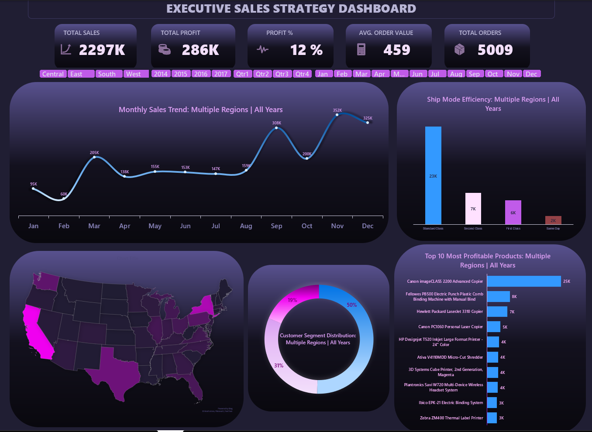

Proje 10 – Yönetici Satış Strateji Dashboard (Excel)

Açıklama
Bu dashboard; satış liderlerine ve üst yöneticilere bölgeler, zaman dilimleri ve müşteri segmentleri genelinde iş performansını tek bir Excel dosyasında, anlık ve veri odaklı biçimde sunmak amacıyla hazırlandı.
Bu dashboard ne sunuyor?
- En kritik KPI'ların özet görünümü: Toplam Satış (2.297K), Toplam Kâr (286K), Kâr % (12), Ortalama Sipariş Değeri (459) ve Toplam Sipariş (5.009) — yönetimin büyük resmi tek bakışta görmesini sağlar.
- Tüm bölgeler ve yılları kapsayan aylık satış trend çizgi grafiği sayesinde mevsimsel zirveler (Q3–Q4) ve düşük dönemler kolayca tespit edilir.
- Kargo modu verimlilik çubuğu grafiği; Standart, İkinci Sınıf, Birinci Sınıf ve Aynı Gün teslimat hacimlerini karşılaştırarak lojistik maliyetlerinin optimize edilmesine yardımcı olur.
- ABD bölge haritası; renk yoğunluğuyla hangi eyaletlerin (California, Texas, New York) en yüksek geliri ürettiğini ortaya koyar.
- Müşteri segmenti halka grafiği; Tüketici (%50), Kurumsal (%31) ve Ev Ofisi (%19) gelir paylarını göstererek hedefli pazarlama stratejilerine zemin hazırlar.
- En Kârlı 10 Ürün çubuğu grafiği; öncelikli tanıtım ve stok kararları için en yüksek marjlı kalemleri sıralar.
Kısaca: bu dashboard, ham işlem verilerini stratejik bir karar destek aracına dönüştürür; bölgeler, segmentler ve ürün hatları genelinde daha hızlı ve güvenli satış planlaması sağlar.
Öneriler (Veriye Dayalı Aksiyon Planı)
- Eylül–Ekim gelir zirvesini yaratan koşulları (kampanyalar, mevsimsel talep) incele ve yavaş dönemlere taşı.
- Standart Kargo hacim açısından baskın — seçili siparişlerde İkinci Sınıf'a geçişin müşteri memnuniyetini etkilemeden maliyeti düşürüp düşüremeyeceğini değerlendir.
- California ve Texas en güçlü pazarlar — daha düşük performanslı eyaletlere genişlemeden önce burada müşteriyi elde tutma çalışmalarını derinleştir.
- Tüketici segmenti gelirin %50'sini oluşturuyor — bu grup için sadakat programları ve çapraz satış yolları oluştur.
- Canon ve Fellowes ürünleri kârlılıkta öne çıkıyor — her zaman stokta olduklarından emin ol ve satış materyallerinde ön plana taşı.
- Ev Ofisi (%19) en küçük segment ama büyüme potansiyeli taşıyor — uzaktan çalışma ürünleri için hedefli B2C kampanyaları test et.
Teknik Detaylar (Veri Analistleri / İşe Alanlar İçin)
- Araç: Microsoft Excel
- Veri Yapısı: Bölge, tarih, ürün, müşteri segmenti ve kargo alanlarını içeren işlem satış verisi
Dashboard Bileşenleri:
- KPI Kartları (5 metrik): Toplam Satış, Toplam Kâr, Kâr %, Ort. Sipariş Değeri, Toplam Sipariş — dilimleyici seçimlerine bağlı dinamik formüllerle hesaplanır
- Aylık Satış Trendi (Çizgi Grafik): tüm yıllar ve bölgeler genelinde aylık bazda toplanmış, mevsimsellik örüntülerini ortaya koyar
- Kargo Modu Verimliliği (Çubuk Grafik): teslimat sınıfına göre sipariş sayısı — Standart, İkinci, Birinci, Aynı Gün
- ABD Bölge Haritası: eyalet düzeyinde satış yoğunluğunu gösteren ısı haritası tarzı dolu harita grafiği
- Müşteri Segmenti Dağılımı (Halka Grafik): Tüketici / Kurumsal / Ev Ofisi gelir payı
- En Kârlı 10 Ürün (Çubuk Grafik): kâr katkısına göre sıralanmış
- İnteraktif Dilimleyiciler: Bölge (Central, East, South, West), Yıl (2014–2017), Çeyrek (Qtr1–Qtr4), Ay (Oca–Ara) — tüm grafikler dinamik olarak güncellenir